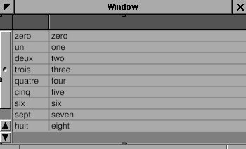
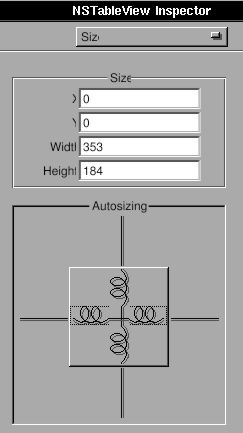
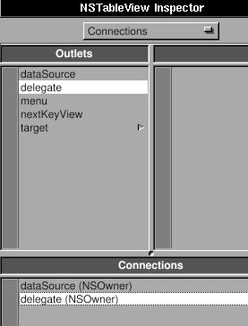
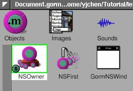
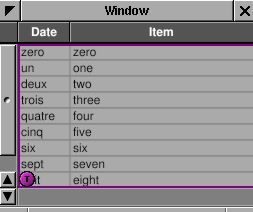

4.2 - Document Editor¶
We now have the skeleton of Money.app. I want it be a
spreadsheet-like application to track the expense.
Spreadsheet-like applications need a table. NSTableView is a good start.
NSTableView is a more complicated user interface than NSButton,
NSTextField, etc. So do NSBrowser, NSOutlineView, NSMatrix, etc. GNUstep
does a great job to make it very easy to use. I’ll try to explain it
step by step.
Here is a related article: Getting Started With
NSTableView
If you are interested in text editors, Ink.app is a good example.
Creating the table view¶
Use Gorm to open Document.gorm. Add a table view into the window. Try to resize it until it fit the whole window.
Figure 4-38. Add table into window


Check the “Horizontal” scroller.
Figure 4-39. Attributes of NSTableView

Look at the Size panel in the inspector of NSTableView. Click the line in
the Autosizing box to make them springs.
Figure 4-40. Set resize attribute of table view

The box represent the NSTableView. The straight line or spring represent
the distance relationship. Line outside the box is the distance between
NSTableView and its superview. It is the window in this case. The line
inside the box is the size of the NSTableView. Straight line means the
distance is fixed, the spring means it is resizable. In this case, when
window is resized, since the distance between NSTableView and window is
fixed, NSTableView will be resized according to the window. That’s the
behavior I want.
You can change the title of the column by double-click on it. But it is
not necessary for now. You will find that it is still hard to control
the interface of NSTableView from Gorm. I’ll do that programmingly.
Therefore, I need a outlet connected to this NSTableView from NSOwner.
Add an outlet, tableView, in the class Document.
Figure 4-41. Add outlet for table view

Set NSOwner as the data source and delegate of the NSTableView. I’ll
explain the data source later.
Figure 4-42. Connect data source and delegate of table view



Connect the outlet tableView to NSTableView.
Figure 4-43. Connect outlet to table view



Save the Gorm file and quit Gorm.
Basic data source¶
Add the new outlet in Document.h.
Document.h:
#import <AppKit/AppKit.h>
#import <AppKit/NSDocument.h>
@interface Document : NSDocument
{
id tableView;
}
@end
The way NSTableView works is that when it needs to display, it will ask
its data source to provide the data it needs. So we need to implement
two methods to provide NSTableView the data it need:
Document.m:
- (int) numberOfRowsInTableView: (NSTableView*) view {
return 5;
}
- (id) tableView: (NSTableView*) view
objectValueForTableColumn: (NSTableColumn*) column
row: (int) row
{
return [NSString stringWithFormat: @"column %@ row %d",
[column identifier], row];
}
The method -numberOfRowsInTableView: returns how many rows NSTableView
should display – in this case, we’ll display 5 rows. The method
-tableView:objectValueForTableColumn:row: returns the value shown in a certain cell in the table.
Now, this application is ready to run, even though it does nothing but
display 5 rows of “column 0 row 0”. This is merely a demonstration of how NSTableView
works. I provide the number of rows, and the object in a given column
and row. As long as these two kinds of data are provided, the
NSTableView can display anything, even a image in the cell. I’ll talk
about more details about data sources later on.
Here is the source code: Table-1-src.tar.gz
Configuring the table view¶
Let’s work on the interface first. NSTableView is a collection of
NSTableColumns. I want three columns for the date, item and amount. By default, there are two columns. Therefore, I need to add a
NSTableColumn into our NSTableView.
Document.m:
- (void) windowControllerDidLoadNib: (NSWindowController*) controller
{
NSTableColumn *column;
NSArray *columns = [tableView tableColumns];
column = [columns objectAtIndex: 0];
[column setWidth: 100];
[column setEditable: NO];
[column setResizable: YES];
[column setIdentifier: @"date"];
[[column headerCell] setStringValue: @"Date"];
column = [columns objectAtIndex: 1];
[column setWidth: 100];
[column setEditable: NO];
[column setResizable: YES];
[column setIdentifier: @"item"];
[[column headerCell] setStringValue: @"Item"];
column = [[NSTableColumn alloc] initWithIdentifier: @"amount"];
[column setWidth: 100];
[column setEditable: NO];
[column setResizable: YES];
[[column headerCell] setStringValue: @"Amount"];
[tableView addTableColumn: column];
RELEASE(column);
[tableView sizeLastColumnToFit];
[tableView setAutoresizesAllColumnsToFit: YES];
}
We adjust the interface of our NSTableView in the method
-windowControllerDidLoadNib:, which guarantees that the Gorm file is
loaded. This is similar to -awakeFromNib. First, we get the existing
columns and change their properties. Second, we create a new NSTableColumn
and add it into our NSTableView. Finally, we adjust the layout of our
NSTableView. This way, we can programatically adjust our NSTableView without using Gorm to adjust it. Run this application
again, and you will see the new column.
Note
At the time this tutorial was originnally written, Gorm did not allow you to configure NSTableView.
An important property of NSTableColumn is its identifier. Each
NSTableColumn has an unique identifier to distinguish them.
The identifier can be any object, but it’s usually an NSString. The
identifier does not have to be the same as the header of the column, but
should being the same for easier management. So we access the
NSTableColumn via its identifier. Many GNUstep objects have identifiers.
Functional data source¶
Now that we’ve finished the interface, we can set up a data source. The data source is an
object which provides the data for NSTableView. Therefore, the data source is
the model in the MVC (Model-View-Controller)
paradigm. Depending on
the behavior of NSTableView, we need to implement the proper methods in
the data source of NSTableView. We already implemented those methods, but they give the useless “column 0 row 0” messages, instead of useful data from our “Money Document”.
The data for NSTableView can be considered as an NSArray of
NSDictionarys. The object in each index of NSArray corresponds to each
row of NSTableView. And the object of each NSDictionary with a given key
corresponds to each NSTableColumn with a given identifier. That’s the
simplest way to build the model for NSTableView. Therefore, I add an
NSMutableArray in Document class.
Document.h:
#import <AppKit/AppKit.h>
#import <AppKit/NSDocument.h>
@interface Document : NSDocument
{
id tableView;
NSMutableArray* records;
}
@end
The “records” will store the data of NSTableView. For more information about the usage of
NSMutableArray, read Basic GNUstep Base Library
Classes.
Document.m:
- (id) init
{
self = [super init];
records = [NSMutableArray new];
return self;
}
- (void) dealloc
{
RELEASE(records);
[super dealloc];
}
- (int) numberOfRowsInTableView: (NSTableView*) view
{
return [records count] + 1;
}
- (id) tableView: (NSTableView*) view
objectValueForTableColumn: (NSTableColumn*) column
row: (int) row
{
if (row >= [records count]) {
return @"";
} else {
return [[records objectAtIndex: row]
objectForKey: [column identifier]];
}
}
We create the instance of NSMutableArray in the method -init, and release it
in -dealloc, which will destroy it if no other object needs it. In the method -numberOfRowsInTableView:, we return one plus the amount of records because we want it to display an extra empty row for the user to add new records. Hence, in the
method -tableView:objectValueForTableColumn:row:, I have to check
whether the row the NSTableView requests is larger than the number of actual records. If so, it is a request for data to show in the empty row. Therefore, we just return an empty string (@""). We are using an array of dictionaries to make the key
of the dictionary the same as the identifier of the NSTableColumn. So I can
get the object directly by knowing the identifier of NSTableColumn. If
you are not using an NSDictionary for each row, you can consider
Key Value Coding
(KVC),
which offers a similar way to get the right object. Otherwise, you have to
use if-else to get the right object. The advantage of NSDictionary (or
KVC) will be more clear for data input.
Data input¶
Now, we’ll add the functionary of data input. First, we have to set the
NSTableColumn to editable.
- (void) windowControllerDidLoadNib: (NSWindowController*) controller {
NSTableColumn *column;
NSArray *columns = [tableView tableColumns];
column = [columns objectAtIndex: 0];
[column setWidth: 100];
[column setEditable: YES];
[column setResizable: YES];
[column setIdentifier: @"date"];
[[column headerCell] setStringValue: @"Date"];
column = [columns objectAtIndex: 1];
[column setWidth: 100];
[column setEditable: YES];
[column setResizable: YES];
[column setIdentifier: @"item"];
[[column headerCell] setStringValue: @"Item"];
column = [[NSTableColumn alloc] initWithIdentifier: @"amount"];
[column setWidth: 100];
[column setEditable: YES];
[column setResizable: YES];
[[column headerCell] setStringValue: @"Amount"];
[tableView addTableColumn: column];
RELEASE(column);
[tableView sizeLastColumnToFit];
[tableView setAutoresizesAllColumnsToFit: YES];
}
When the user double-clicks a cell, the user can edit the contents of the cell. When the user finishes, the table view will send -tableView:setObjectValue:forTableColumn:row: to the data source.
Document.m:
- (void) tableView: (NSTableView*) view
setObjectValue: (id) object
forTableColumn: (NSTableColumn*) column
row: (int) row
{
if (row >= [records count]) {
[records addObject: [NSMutableDictionary new]];
}
[[records objectAtIndex: row] setObject: object
forKey: [column identifier]];
[tableView reloadData];
}
Again, we need to take care of the special situation where user input in the last
empty row. Since it is not in the records, I need to add a new
dictionary item to the records, to represent a new row. Whenever the user inputs the data, it will be
store into records according its row and the identifier of the column. And
the key in the dictionary is the same as the identifier of the NSTableColumn.
Hence I can retrieve the data according to the identifier of the column.
Finally I ask the NSTableView to reload the data in order to reflect the
change of data source.
Now you can play around this application and input the data.
Here is the source code: Table-2-src.tar.gz.
This example shows how easy it is to make a real document-based application without worrying about the management of multiple documents and windows.